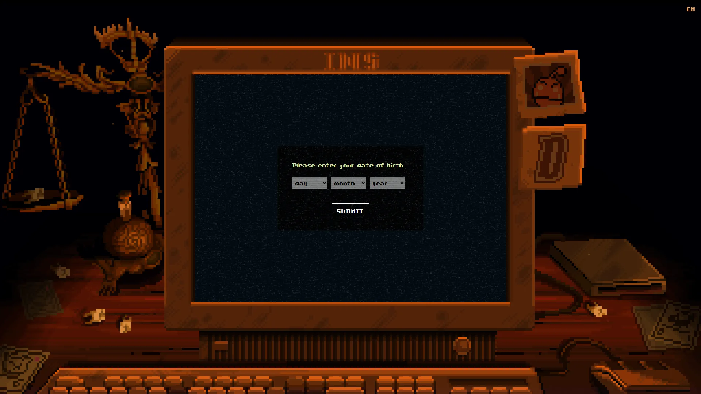

实验性卡牌恐怖游戏，融合Roguelike、解谜和元叙事。
想象一段被三重时间线解构的 meta 卡牌世界——第一幕是森林深处一间烛光摇曳的小木屋密室，对面坐着没有面孔只有发光眼睛的 Leshy。第二幕画面崩塌成 16 色 DOS 像素 RPG，地图上城堡墓园由 Grimora 主宰。第三幕翻进程序化抽象空间——P03 的赛博工厂霓虹冷光。Daniel Mullins 把木刻塔罗、像素怀旧、数字解构三层美术叠加在一张被 OLD_DATA 污染的软盘里——你以为在玩卡牌，其实在挖一段被埋了二十年的 ARG 录像。
你扮演Luke Carder——一名在 YouTube 直播开箱古董游戏的爱好者。开场你拆开一张从陌生人手里得到的可疑软盘，启动后被强行拖入一场三幕颠覆类型的卡牌恐怖局。对手是四位 Scrybes 执笔者：森林占卜师 Leshy、亡灵女王 Grimora、塔术师 Magnificus、机械之神 P03——每位代表一种卡牌玩法风格。软盘里到底封印了什么——你 Luke 一边玩一边把直播录像传上 YouTube，观众反过来卷入了 ARG 真相挖掘。
那次你为了召唤鹿魂亲手献祭桌上松鼠的瞬间，Daniel Mullins 把卡牌类型颠覆做到独立游戏天花板——你打的不是怪，是「软盘里封了什么」这道横跨二十年 ARG 旧谜；那场你在第二幕看到熟悉牌面突然崩成像素战棋的桥段——三幕规则更替让你明白「你以为它是卡牌，它其实是恐怖；你以为它是恐怖，它其实是 ARG」；那次你把 Luke 的录像文件拖进 YouTube 上传框的对话节点，元层级凿穿第四面墙。这不是关于打败对手的故事，是「这一局你赌什么」的故事——下一张被你献祭的卡，会换来什么？
三重 meta 风格 × 卡牌恐怖，是 Daniel Mullins 把木刻塔罗烛光密室（动物头骨、油画卡面、发光眼睛）和16 色 DOS 像素怀旧（节点地图、低分辨率字体、90 年代 RPG 调色）以及赛博数字解构（P03 霓虹冷光、抽象几何、OLD_DATA 故障艺术）三层叠加在类型颠覆 Roguelike 卡牌外壳里的混血美学。底色是《七宗罪》× PT 寂静岭试玩版密室恐怖血统；变异在于把美术风格本身当成叙事工具——每翻一幕画风都重写一次。
「卡牌恐怖+meta 解构+ARG」视觉线跨越四十年。1993 年Richard Garfield《万智牌》定义现代收集卡牌品类母版——本作召唤系统直接来源。1995 年Sir-Tech《巫术 7》把 DOS 像素 RPG 节点冒险做到 90 年代神作——本作第二幕精神来源。1995 年大卫·芬奇《七宗罪》定义密室心理恐怖电影范式——可对照 Leshy 烛光密室调性。2014 年小岛秀夫《P.T. 寂静岭试玩版》定义 ARG meta 恐怖品类——本作元层级精神祖父。2017 年Daniel Mullins《Pony Island》把恶魔游戏 meta 解构开辟独立子类——前作精神 DNA。2021 年《邪恶冥刻》在 Devolver 发行下登场——TGA 2021 最佳独立游戏，三幕颠覆把卡牌恐怖推到品类天花板。
基于体验清单 · 审美偏好 · IP故事三维度综合选出